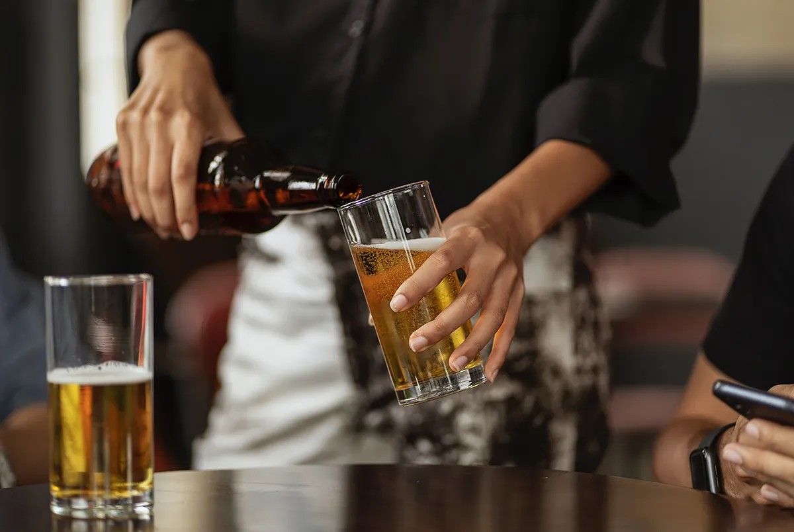

EVENT
BEER TASTING
Beer Boutique has always been something bigger than just a pub. We often host different events and tastings with local and world-famous beer producers.
BLOG & EVENTS
Read interesting articles about beer culture and our news.
EVENT
Beer Boutique has always been something bigger than just a pub. We often host different events and tastings with local and world-famous beer producers.
BEER BLOG
What goes first, the food or the beer? Here is a brief guide to choosing the combination of beer and snack, so that they complement each other's flavor. Spoiler: no chips in this list.
FESTIVAL
Irish Beer festival is a small celebration of the Irish tradition in drinking culture. Our brewmasters will introduce an exclusive line of ales especially for our guests at the festiva...